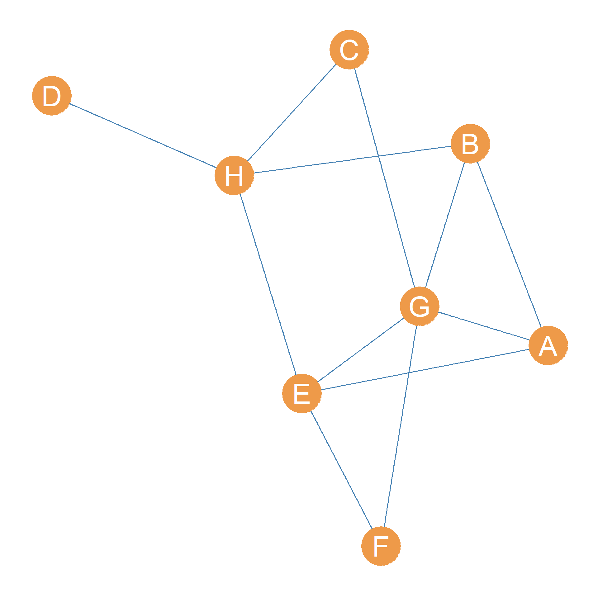
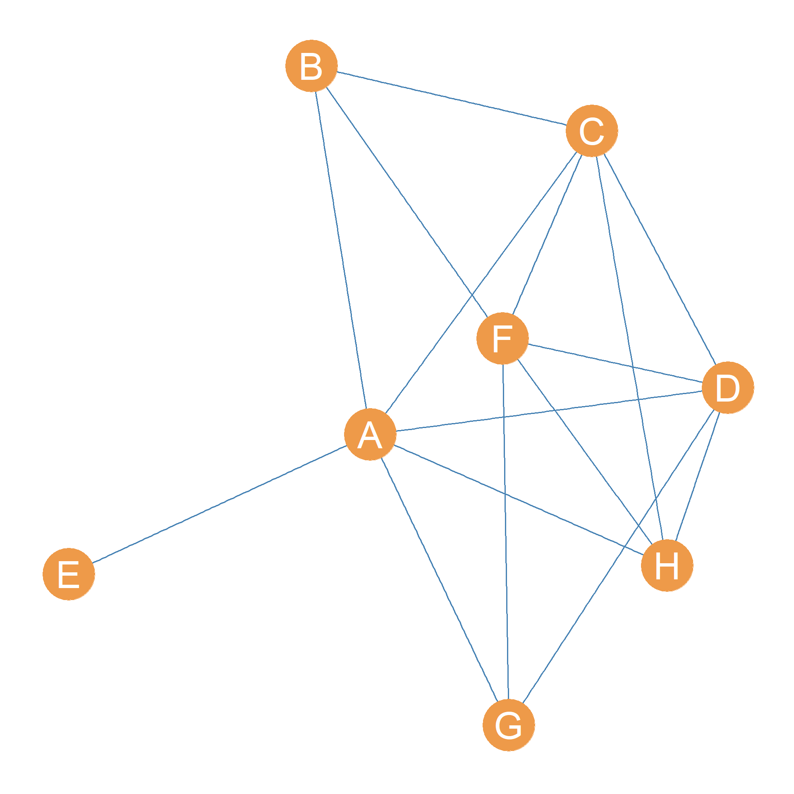
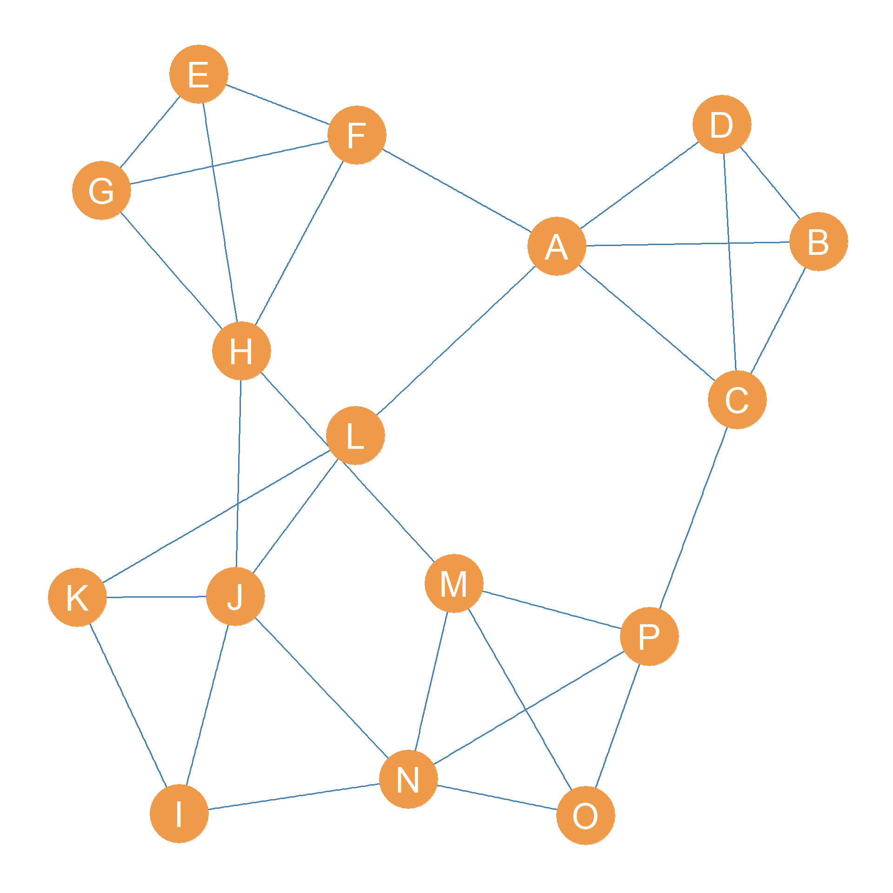
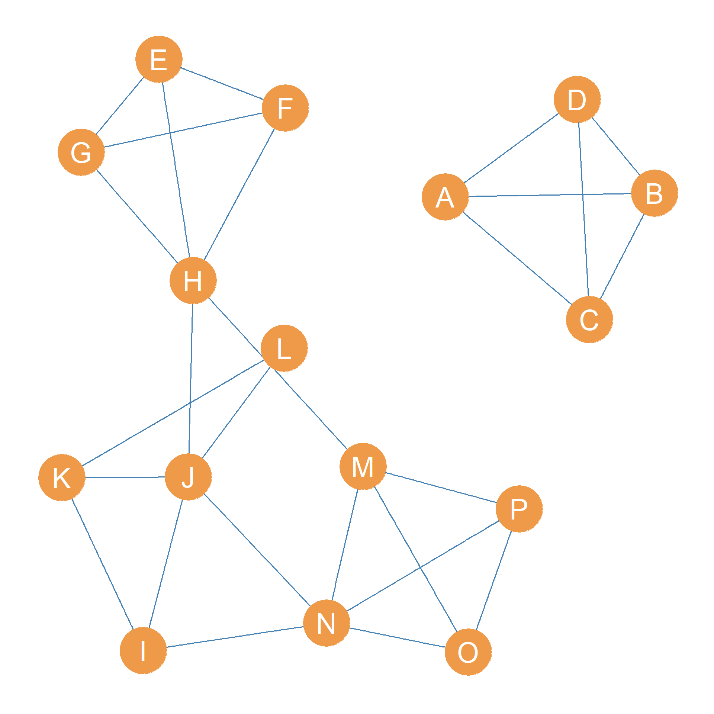
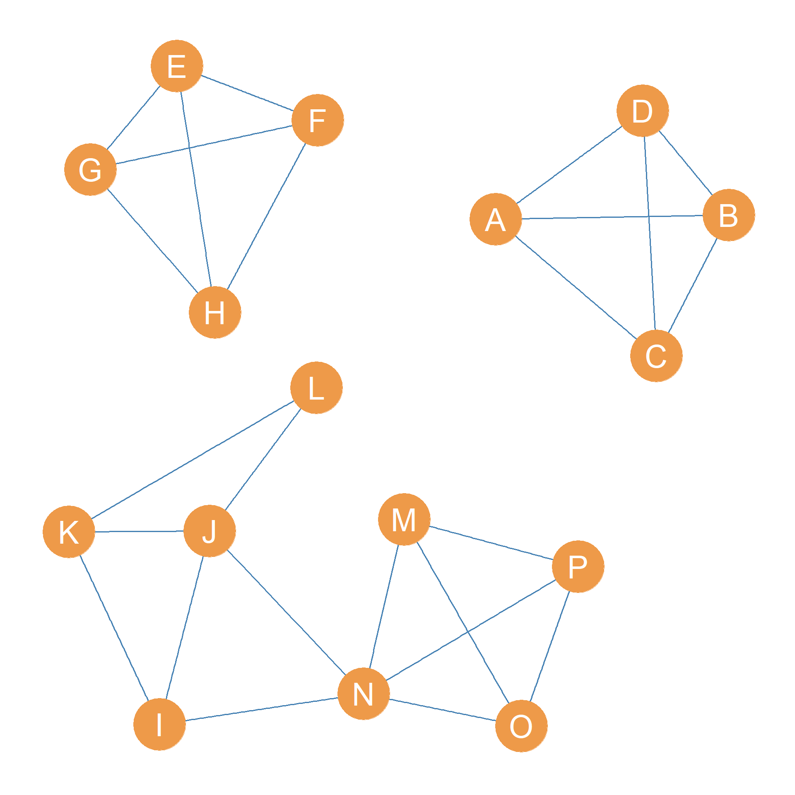
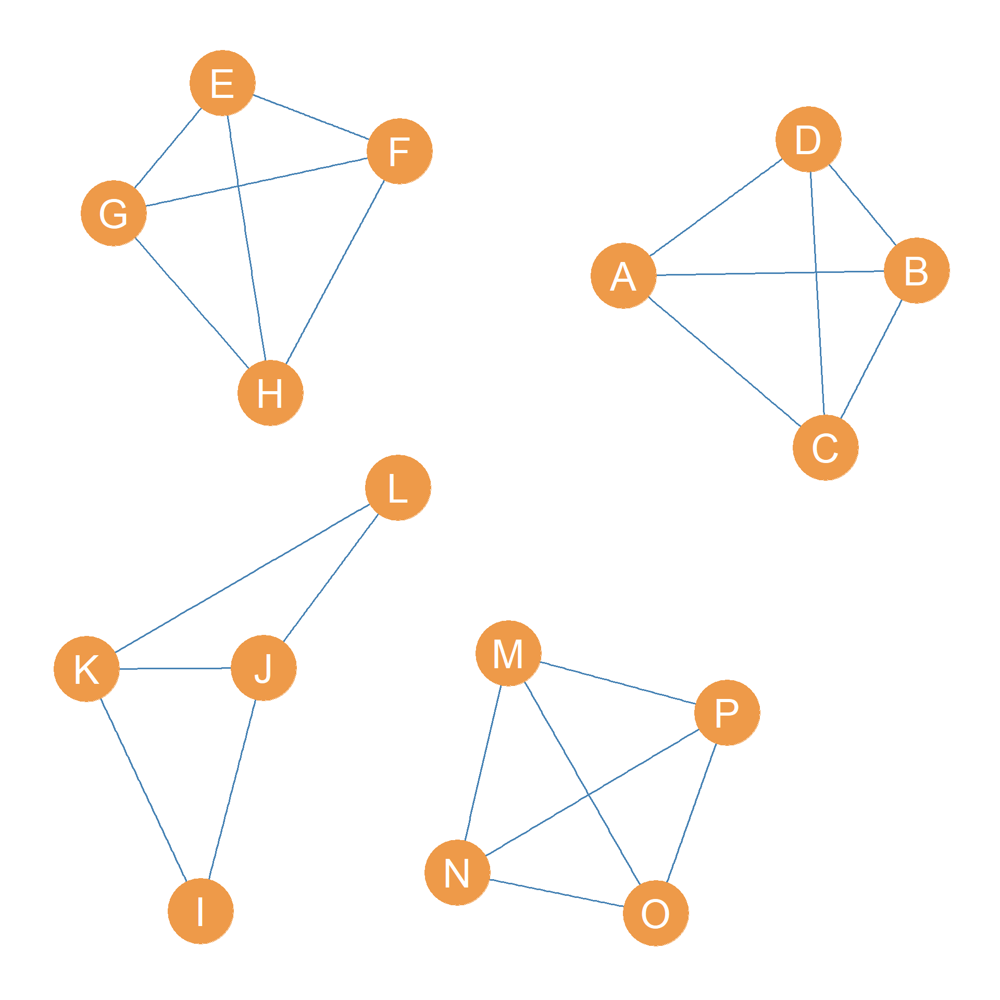
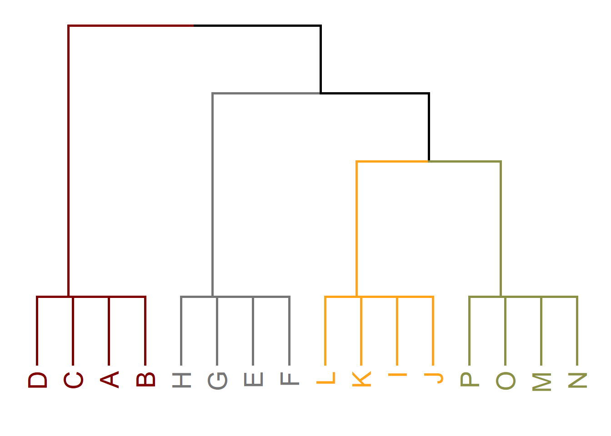

25 Cohesive Subsets
In Chapter 24 we explored once approach to analyzing the group structure of a network. There we focused on finding densely connected subgraphs in the structure, with the clique providing the ideal type of a maximally complete subgraph, that is a subgroup where every actor is connected to one another.
However, we saw that perhaps the ideal of full connectivity is too strong to define a group, which is why we turned to Luce’s notion of an n-clique which counts groups not based on a direct criterion of connectivity (like adjacency; see Chapter 2) but using an indirect criterion (like reachability; see Chapter 7).
Yet, both of these ideas of groups are based on an intrinsic criterion of what counts as group, and that is the level of connectivity that actors in a group how with each other. However, there is also a positional criterion for what makes a group a group, and that is the idea that group members should have more connections with the people inside the group than with people outside the group (Seidman and Foster 1978).
In network analysis, groups that meet both the intrinsic and the positional criterion for counting as a group are called cohesive subsets (Borgatti, Everett, and Shirey 1990).
In this lesson we explore some ways of defining cohesive subsets using graph theory and network-analytic ideas.
First, we need to define some graph-theoretic concepts. Most of these are generalizations to the case of pairs of nodes in a graph of concepts we already defined in section Chapter 8 for the graph as a whole.
25.1 Pairwise Edge Connectivity
Recall that the edge connectivity of a graph \(G = \{E, V\}\) is defined as the cardinality of one of the graph’s minimum edge cutsets, where a graph’s edge cutset is any subset of edges taken from the larger set \(E\) that disconnects the graph, an a minimum cutset is an edge cutset of the smallest cardinality possible. So, a graph with edge-connectivity equal to two, contains at least one subset of edges of cardinality two that if removed would disconnect the graph.
Just like we can define an edge-connectivity number for the whole graph, we define an edge connectivity for each pair of nodes in the graph. The beauty is that the pairwise edge connectivity between two nodes is the define the same way as for the whole graph.
Thus, if A and B are two nodes that belong to the larger set \(V\) of a connected graph \(G\), then their edge connectivity—written \(\lambda(A,B)\)—is given by the minimum number of edges that we would have be removed from \(G\) to disconnect A and B.
Consider the graph shown in Figure 25.1. Let’s say we wanted to figure out the edge connectivity of some of the nodes in the graph. The case of D and H is pretty obvious; their edge connectivity is clearly \(\lambda(D, H) = 1\) since all it takes is to remove the \(DH\) edge to disconnect D and H.
In fact, since D is clearly an end-node in the graph (a node with degree equals one), the node connectivity between D and every other node in the graph is equal to one: In mathese, \(\lambda(D, V-D) = 1\).
This also means that the edge connectivity of the whole graph shown in Figure 25.1, as discussed in Chapter 8, which is always the minimum edge connectivity for any pair of nodes is also going to be one: \(\lambda(D, V-D) = 1\).
What about the edge connectivity between nodes F and G? Here, we can’t just disconnect these two nodes by removing their direct connection, edge \(FG\). The reason is that F can still reach G via path \(\{FE, EG\}\). So we also need to remove the \(FE\) edge to disconnect F and E, meaning that \(\lambda(F, E) = 2\).
25.1.1 The Edge Connectivity Matrix
We can of course keep going and figure out the pairwise edge connectivities for each pair of nodes in the graph. We can store this information in a handy dandy matrix, which we will call the graph’s edge connectivity matrix.
The edge connectivity matrix for the graph shown in Figure 25.1 is shown in Table 25.1.
| A | B | C | D | E | F | G | H | |
|---|---|---|---|---|---|---|---|---|
| A | -- | 3 | 2 | 1 | 3 | 2 | 3 | 3 |
| B | 3 | -- | 2 | 1 | 3 | 2 | 3 | 3 |
| C | 2 | 2 | -- | 1 | 2 | 2 | 2 | 2 |
| D | 1 | 1 | 1 | -- | 1 | 1 | 1 | 1 |
| E | 3 | 3 | 2 | 1 | -- | 2 | 4 | 3 |
| F | 2 | 2 | 2 | 1 | 2 | -- | 2 | 2 |
| G | 3 | 3 | 2 | 1 | 4 | 2 | -- | 3 |
| H | 3 | 3 | 2 | 1 | 3 | 2 | 3 | -- |
Table 25.1: Edge connectivity matrix of a connected graph.
Note that the edge connectivity matrix is symmetric which makes sense since for any node A and B \(\lambda(A, B) = \lambda(B, A)\). The diagonals are empty since edge-connectivity is a pairwise relation between different nodes in the graph.
The edge connectivity between two nodes can be interpreted as the strength of the indirect ties between any two nodes in the graph. The higher, the stronger the indirect links between two nodes.
It is clear, from looking at Table 25.1, that the strongest connected nodes in Figure 25.1 are nodes E and G with \(\lambda(E,G) = 4\), which means that we would have to sever four distinct relationships in the network to disconnect them.
25.1.2 Edge-Independent Paths
A mathematical theorem in graph theory says that if the edge connectivity between two nodes is a certain number n, then than means that there are a maximum of n edge independent paths connecting the two nodes in the graph (White and Harary 2001, 333). Two paths are edge-independent if they don’t share any edges between them.
This means for instance, that nodes E and G in Figure 25.1 are connected by four distinct paths that don’t share any edges between them. These are: \(\{EG\}\) (their direct link) and \(\{EF, FG\}\), \(\{EH, HB, BG\}\), and \(\{EA, AG\}\). You can see that all the edges in these four paths are different. The same applies for every pair of nodes in the graph.
25.2 Pairwise Node Connectivity
Pairwise node connectivity works the same way as edge connectivity with some wrinkles. The pairwise connectivity between two non-adjacent nodes A and B in a graph \(G\)—written \(\kappa(A, B)\)—is the minimum number of nodes that would have to be removed from the graph to eliminate all paths connecting A and B (thus disconnecting them).
Note that in contrast to edge connectivity, node-connectivity is only defined for non-adjacent nodes. The reason is that for pairs of nodes that are directly connected by an edge, there’s no amount of other nodes we could remove from the graph to disconnect them! We could remove all the other nodes and we would just have a single connected dyad left at the end [hararywhite01].

Consider the graph shown in Figure 25.2. Let’s say we wanted to figure the node-connectivity of nodes E and G. Well that’s easy because we know that removing node A will disconnect them.
In fact, the node connectivity of node E and the rest of the nodes in the graph except for A, written \(\kappa(E, V-(A, E)) = 1\) is one, since removing A separates E from every other node in the graph other than A. Recall than since E and A are adjacent, their node connectivity is not defined.
How about the node connectivity of B and H? This one is a bit harder, because we can’t just remove one node to disconnect them. Getting rid of A will not do, because B can still reach H via path \(\{BF, FH\}\). But getting rid of F will not do either because B can still reach H via path \(\{BC, CH\}\). So we would have to remove all three nodes \(\{A, F, C\}\) to disconnect B and H meaning their pairwise node connectivity is \(\kappa(B, H) = 3\).
25.3 The Node Connectivity Matrix
As with pairwise edge connectivity, we can keep on going and calculate a node connectivity for each pair of non-adjacent nodes in the graph. We can collect these results in a matrix, where each cells records the node connectivity of the row node with respect to the column node. The result would look like Table 25.2.
| A | B | C | D | E | F | G | H | |
|---|---|---|---|---|---|---|---|---|
| A | -- | -- | -- | -- | -- | 5 | -- | -- |
| B | -- | -- | -- | 3 | 1 | -- | 3 | 3 |
| C | -- | -- | -- | -- | 1 | -- | 3 | -- |
| D | -- | 3 | -- | -- | 1 | -- | -- | -- |
| E | -- | 1 | 1 | 1 | -- | 1 | 1 | 1 |
| F | 5 | -- | -- | -- | 1 | -- | -- | -- |
| G | -- | 3 | 3 | -- | 1 | -- | -- | 3 |
| H | -- | 3 | -- | -- | 1 | -- | 3 | -- |
Table 25.2: Edge connectivity matrix of a connected graph.
As Table 25.2 shows, the node-connectivity of E with every other node in the graph except for A is one, which is what we suspected. Note that since one is the minimum node connectivity observed among any pair of nodes in the graph, this is also the node connectivity of the whole graph: \(\kappa(G) = 1\), as discussed in Chapter 8.
In contrast, the strongest connected nodes in terms of node-connectivity are the pair (A, F) which have node connectivity \(\kappa(A, F) = 5\) the maximum in the graph. This means that we would have to remove five nodes to disconnect them, namely, the set formed by \(\{B, C, D, H, G\}\).
This also means following a theorem proved by the mathematician Karl Menger in 1927, and very appositely named Menger’s Theorem, that there are also five node-independent paths linking nodes A and H in Figure 25.2. Two paths are node-independent if they don’t share any inner nodes.
More generally, Menger’s Theorem says that for any pair of node-adjacent nodes in a connected graph, if we know their node connectivity is some number n then we also know that there are n node-independent paths connecting them.
In the case of A and F in Figure 25.2, the five node-independent paths linking them are as follows:
- \(\{AB, BF\}\)
- \(\{AC, CF\}\)
- \(\{AD, DF\}\)
- \(\{AH, HF\}\)
- \(\{AG, GF\}\)
You can verify that each of these paths have distinct inner nodes not shared by any of the other four paths!
25.4 Using Edge Connectivity to Find Cohesive Subsets
You may be wondering why we have bothered to define all of these graph theoretic concepts, neat as they are. The reason is that we can use the ideas developed in Section 25.1 and Section 25.2 to develop techniques to find cohesive subsets in networks. That is, discover set of actors who have stronger connections among themselves than they do with the rest of the actors in the system, the topic we began this lesson with. In this section, we show how use the ideas developed in this lesson, along with those in Chapter 8 to do that for the case of edge connectivity.




Consider Figure 25.3 (a). Let’s say we wanted to identify the most cohesive subgroups in the graph, based on the idea of edge connectivity. How would we proceed?
The first we would do is ask: What is the edge-connectivity of the whole graph in Figure 25.3 (a)? We know the answer to this question from Chapter 8: The edge connectivity of the graph is the minimum number of edges that it would take to disconnect it.
In the case of the graph shown in Figure 25.3 (a), the answer is \(\lambda(G) = 3\). We can disconnect the graph by removing the minimum edge cutset \(\{AF, AL, CP\}\), whose cardinality (number of members) is indeed, three.
So the second thing we do is go ahead and delete the edges in the minimum edge cutset from the graph. This results in Figure 25.3 (b), which is a graph with two connected components.
What do we do now? Third, we compute the edge-connectivity of each of the connected components of the new disconnected graph, and disconnect the component with the smallest edge connectivity.
What is this business about the edge connectivity of each component? Well, just like connected graphs have an overall graph edge connectivity (see Section 8.3), the separate components of a disconnected graph also have an edge connectivity. More generally, in a disconnected graph with components \(\{C_1, C_2, \ldots C_k\}\), a k-edge-connected component is a component with edge-connectivity k.
For instance, in the graph shown in Figure 25.3 (b), the largest giant component is clearly a 2-edge-connected component; \(k=2\) because all it takes is removing two edges (the \(HJ\) and \(HM\) edges) to disconnect it.
The smaller component however, is a clique of size four featuring nodes \(\{A, B, C, D\}\), which means that it would removing three edges to disconnect any one of the actors from the others, so it is a three-connected component.
In general, if a subgraph of a larger graph is maximally connected (it is a clique) then the edge connectivity of that subgraph is always \(n-1\), where n is the number of nodes in the clique.
So it is clear that our next step is to disconnect the giant component by removing the relevant two edges. This is shown in Figure 25.3 (c).
Now we have a graph with three components, two of them are cliques of size four with edge-connectivity \(4-1 = 3\). So we compute the k-edge connectivity of the larger component left, which is \(\lambda(C_3) = 2\), as all it would take to disconnect the component is to remove the edges \(JN\) and \(IN\). So we go ahead and delete this minimum edge cutset, leading to the graph in Figure 25.3 (d).
We can stop now because disconnecting any of the four components left would result in producing an isolate node. So that means that we have identified the cohesive subgroups in the graph!
Note that at each step, the cohesive subgroups are nested inside one another. So they can be arranged into something called a dendrogram that shows this nesting, as in Figure 25.4.

Borgatti, Everett, and Shirey (1990) refer to the nested cohesive subgroups identified using this approach as lambda sets, after the Greek letter lambda (\(\lambda\)) which is used to indicate the edge connectivity of a graph, a component, or a pair of vertices as we have seen in this lesson and Chapter 8.
Technically, each of the components in the graphs shown in Figure 25.3 (a), Figure 25.3 (b), and Figure 25.3 (c) are lambda sets under the definition provided by Borgatti, Everett, and Shirey (1990).
Lambda sets are, of course, subgraphs of the original graph, but they have interesting properties. First, at any stage of the graph partition process, each node belongs to only one lambda set. Smaller lambda sets like \(\{M, N, O, P\}\) are nested within others such as \(\{I, J, K, L, M, N, O, P\}\).
Second, the pairwise edge connectivity between nodes in the same lambda set is always larger than the pairwise edge connectivity between any other node in the lambda set (including themselves) and a node not in the lambda set. That means that nodes inside a lambda set have stronger indirect connections with one another than they do with outsiders, which is precisely what we would want in a cohesive subset of actors.
References
Borgatti, Stephen P, Martin G Everett, and Paul R Shirey. 1990. “LS Sets, Lambda Sets and Other Cohesive Subsets.” Social Networks 12 (4): 337–57.
Seidman, Stephen B, and Brian L Foster. 1978. “A Graph-Theoretic Generalization of the Clique Concept.” Journal of Mathematical Sociology 6 (1): 139–54.
White, Douglas R, and Frank Harary. 2001. “The Cohesiveness of Blocks in Social Networks: Node Connectivity and Conditional Density.” Sociological Methodology 31 (1): 305–59.